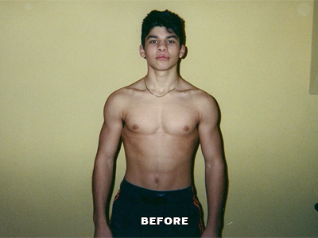
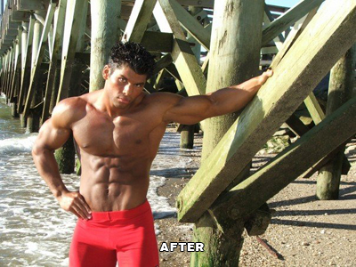
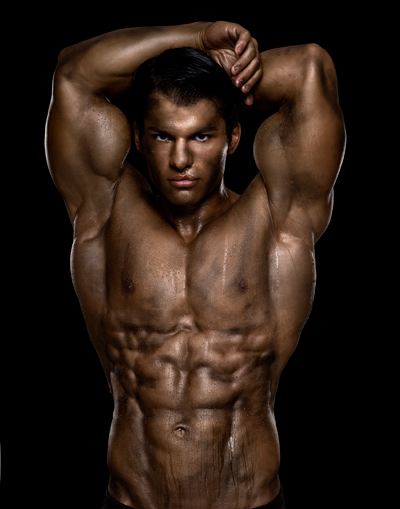

Get An Attractive, Sculpted And Lean Body FAST
GUARANTEED
Exclusive Personal Training
For Long Islands Exclusive
Secrets Of Top Fitness Models And Celebrities Used To Scorch Your Stubborn Body Fat Stores And Sculpt Lean Muscle
Qualify For Your FREE ($100 Value) Phone Consultation With Long Islands Top Body Sculpting Specialist
From Gary Amlinger CFT
Founder of Destination Fitness Personal Training
Serving Long Island, New York
Dear Friend,
Hey I'm Gary Amlinger... a Long Island fitness trainer, professional fitness model and body sculpting specialist. I have some personal questions to ask you and it's important that you answer them truthfully...
- Have you ever walked into a social gathering and immediately experienced feelings of self consciousness due to the other attendees displaying a more healthful appearance?
- Have you ever felt that sinking feeling in the pit of your stomach as you walked into a business affair, knowing that you were out of shape and lacked the confidence to boldly follow through?
- Do you fear your significant other's attraction toward you is waning and he or she might go elsewhere?
- Do you avoid dating because you just don't feel secure enough about the way that you look and feel?
- Do you feel like you have less fulfilling relationships with friends and family because you're not completely happy with yourself?
- Do you dread seeing your reflection in the mirror and wish that the person looking back at you, was healthier and in better shape?
- Have you experienced feelings of inadequacy or even embarrassment when being intimate with another person, which prohibits you from enjoying intimacy to its fullest?
- Do you sometimes feel guilty about neglecting your health, knowing that it does not only affect your way of life, but the life of your loved ones as well?
If you answered "YES" to any of these questions, let me tell you that you are certainly NOT ALONE. I know because at one point in my life, I could have answered "YES" to every single question above...
If you've never been told this before, allow me to be the first to tell you that IT IS NOT YOUR FAULT. It is 100% not your fault that the media has countless views that misinform YOU on what works and what doesn't work in exercise and nutrition.
We live in a world where TV and magazines advertise fad diets and overly complicated workout routines that do absolutely nothing, but "WOW" you into thinking that these methods actually work and take your hard earned money...
Well, as I am sure you have found out first hand, they do not work. And not only do these fitness fads not work, but they're remarkably unhealthy.
Working as a professional fitness model for almost a decade, I have tapped into a world that most of humanity will never get to experience...
Being immersed in an environment that seeks perfection in every way possible, there is no room for inadequate nutrition plans or ineffective training methods.
Working as a fitness model, if you aren't in near perfect shape year round, you will not receive work and in turn, cannot support yourself to live...
Through many years of research, employing countless exercise science and nutrition methods and my experience as a professional fitness model, where I was immersed in an environment surrounded by some of the best physiques in the world...
I am now able to bring YOU the true solution to developing an attractive, lean and healthy body...
I wasn't always Mr. Fitness...
During my high school years, I was VERY self conscious about the way that I looked. Being that I was 120 lbs (On a good day...), you could only imagine how often I was teased and ridiculed.
Having an extremely unhealthy self image, my self esteem was at an absolute ZERO. I was so insecure about the way that I looked, that I would actually AVOID interacting with people at social outings. And when people would approach me to be sociable, I would completely freeze up and hardly be able to speak (Yes, it was THAT bad)...
I couldn't stand interacting with other people because I was just so unhappy with myself. I was too scared to talk to women, let alone date them. I couldn't stick to a job or school schedule because of my "phobia" of being around other people. My family and friends always wondered why I never smiled, and that probably hurt the most...
The thing is... I WANTED to be happy... I WANTED to enjoy interactions with family and friends... I WANTED to be able to look at myself in the mirror without cringing... I WANTED to end my bouts with depression caused from not being able to attract a lover or quality friends in my life.
But I was just so disgusted with the way that I looked and felt inside...
In a nutshell, I felt WORTHLESS. I had no control over myself or any significant aspect of my life. Something HAD to change...
It always fascinated me to see how people could literally transform their bodies from being overweight or skinny, to adopting a persona of power and confidence through exercise.
After a ton of self-education on health and fitness, I decided to start my journey to a sculpted, attractive physique...
As the occasional workout started to develop into a more consistent activity, I began to realize exercise had become my very own "therapy". Being that I was socially clumsy, insecure and unhappy with the way that I looked and felt, exercise became an outlet for me to release all of my stress and frustrations.
The thing is... as great as the feeling was from exercising and all... I still wasn't getting the RESULTS that I wanted. I was still very unhappy with the way that I looked, and exercising wasn't really doing much for my physique...
I'd workout for long periods of time and put EVERY OUNCE OF ENERGY I had into each workout, but I still wasn't reaping the benefits that I saw all the people in the magazines were getting!
Out of desperation, I started to try out the so called "top" training and nutrition programs you see on TV and in magazines... But as you could expect, none of them actually worked...
I didn't know what to do anymore... The fact that I couldn't figure out how to get into shape, no matter how much I researched and tried every training and nutrition method under the sun... and no matter how much energy I put into every workout... FRUSTURATED ME BEYOND BELIEF!
I had tried it ALL, from complicated workout videos to "magical" supplements and pills, but it was all completely useless!
As I became more and more frustrated with myself and my life, I finally had ENOUGH. I decided it was time to take a more radical approach...
This is when I made it my number one goal in life to learn the most effective way to get an attractive, sculpted body...
And I would do so by personally learning from the best physiques on the planet...
It was at this low point in my life, I decided to join the Mecca Of Bodybuilding, Bev Francis Gold's Gym. Bev Francis Gold's Gym is one of the top physique gyms in America. Supermodels, professional athletes and famous actors work out there on a daily basis, and I felt it was a great opportunity for me to find out what REALLY works in achieving an attractive physique.
From the moment I stepped into Gold's Gym, I began to pick the brain of every model, professional athlete and well known actor that I came across. I would literally SURVEY every single one of them...
Actually, now that I think about it... I almost got kicked out of the gym on a few occasion's for "bothering" the "famous" people a little bit too much...
But it ended up being ALL worth it in the end! What I had learned from them was exactly what I needed to take my physique to an entirely new level. I was able to weed out ALL of the useless, hyped up training and nutrition methods, and use the systems that ACTUALLY WORKED in transforming your body.
Learning from the people who have achieved what I wanted to, which was sporting an attractive and healthy body, was more valuable than anything I ever tried before...
Over the next 2 years of working out alongside the world's top physiques, I put on over 60 lbs of muscle mass, all the while maintaining a 5% body fat percentage, WITHOUT the use of harmful drugs or surgery...
However, the way I looked was only the tip of the iceberg. The most rewarding part of getting into shape was how I felt inside. To put it simply, my self-acceptance and self love (Which I really didn't have much of from the beginning...) had sky rocketed.
I was no longer teased, but instead respected and loved. Socially confident I now enjoyed being with people instead of dreading social situations. I was able to freely approach women without fear, although I didn't really have to because I was the one getting approached most of the time! My career and school performance improved tenfold...
I mean literally EVERYTHING got better in my life... I now harnessed a sense of well being and vivacity that I never had before.
And let me tell you something... When YOU wake up in the morning energized and excited about your day, your whole life changes... Your entire outlook on life is altered in a way that anything you want to achieve is within your grasp.
And this is where the power lies in living a fit lifestyle...
Qualify For Your FREE ($100 Value) Phone Consultation With Long Island's Top Body Sculpting Specialist
Professional Fitness Model
Gary Amlinger
Destination Fitness Personal Training
Having Immersed myself in the world of fitness modeling, I am now able to BRING YOU THE MOST POTENT BODY SHAPING CONCEPTS on Earth...
I knew I had come a LONG way when I stepped on stage at my first natural bodybuilding contest. Flashbacks of the days of unhappiness and frustration would come to mind when thinking about the useless fad workouts and intolerable diets I put myself through. Fortunately, those days were long gone...
However , it wasn't until I became certified as a personal trainer and began to transform the bodies of my close friends and family with SHOCKING RESULTS, that I truly realized I had cultivated extremely effective exercise and nutrition concepts...
Competing in the INBF (International Natural Bodybuilding and Fitness), which is one of the top All-Natural Federations in Natural Bodybuilding, I placed as one of the top ranked teenagers in New York. After my first competition, I was contacted by top fitness publications such as Exercise For Men Only and Natural Bodybuilding and Fitness to be featured in their magazines.
This was the beginning of my fitness modeling career and eventually exposure to the most effective body shaping concepts in the world...
After much publicity from being featured in numerous fitness magazines, I came in contact with one of the top fitness modeling agencies in New York City, Silver Model Management.
Silver Models represents top-tier sports models, professional athletes and established actors who work with the most recognized companies in the world including Nike, Under Armour and Abercrombie & Fitch. Silver Models also works with high end magazines such as Men's Health and popular TV shows including Conan O'Brien and Saturday Night Live.
Signing with Silver Model Management and immersing myself in the environment of modeling, allowed me to expand my knowledge and skills of fitness even further than I ever thought possible...
Before I knew it, I was shooting commercials for MTV, work out videos for the world's leading fitness modeling website, Strengthnet.com, and being photographed by top fitness photographers Norberto Torriente and Bill Terry, who's work can be seen in top fitness magazines such as Muscular Development and Exercise For Men Only, and celebrity photographer Mike Ruiz, who has done photo shoots with the "who's who" of celebrities, including Justin Timberlake, Eva Longoria, Christian Bale, Kate Beckinsale, and Kim Kardashian. I eventually made my way into making appearances in Apple applications, such as "Pretty Masculine", and doing fight choreography for international films.
Learning from the most fit people on the planet allowed me to refine my fitness skill set, taking away PRICELESS nutrition and exercise techniques that can be used to shape YOUR body into an enviable, sculpted and undeniably attractive form...
Deciding to dedicate my life to being a fitness trainer, I armed myself with one of the leading certifications for fitness trainers in the country, the Certified Fitness Trainer certification from the International Sports Sciences Association.
The ISSA CFT certification is nationally accredited, backed by some of the industry's top fitness professionals throughout North America, who's teachings are some of the most prestigious and respected in the fitness field. The ISSA CFT is also held by some of the best fitness trainers in the world including celebrity trainer, Jackie Warner.

After my physique transformation and the transformation of the many people I have trained during my fitness modeling and personal training career, it became clear to me that personal training is the vocation I truly love and feel the most fulfilled doing.
I have a burning desire and passion to help people through fitness. I know from firsthand experience, what a sound mind and healthy body can do for someone's life...
Fitness ads subject YOU to COUNTLESS lies, myths and misconceptions on a daily basis...
Society and the media portray the "most effective" fat loss and muscle building solutions in ads ranging from magazines to the largest soundboard on earth, the internet.
But the fact of the matter is, the people behind these so called "solutions" have an agenda, and that agenda does not have your best interest at heart. Allow me to share with you some of the most popular misconceptions that you have been exposed to by society and the media:
- Cardio is the best way to burn fat
- Women should not weight train because they will get "bulky"
- The only way to get and stay lean is to stay on a very low calorie diet
- You can burn fat covering a specific muscle by exercising that muscle group
- Women should workout to burn fat, NOT gain muscle
- "Diets" are all restrictive and bland
Through my own trials and tribulations, I too have believed many of the popular myths that are floating around society today. If I didn't get into the trenches MYSELF to see how fitness really works, I might have never been able to distinguish the real truth from all the lies...
Let's take a closer look at these fitness myths:
Cardio is the best way to burn fat... FALSE! Spending hours upon hours in aerobic style classes and on the treadmill or elliptical, is actually HURTING your fat burning potential. When you take part in these types of exercise methods, you're actually losing mostly muscle mass (Which LOWERS your metabolism) and water weight, NOT FAT!
The BEST way to burn fat is to increase your metabolism through resistance training and high intensity interval exercises. Having your metabolism soaring 24 hours a day is what will enable YOU to burn body fat, ALL DAY LONG.
-
Women should not weight train because they will get "bulky"... FALSE! This is possibly the BIGGEST misconception out of them all! Ladies, you can train with lighter weights, strict form, high repetitions, low rest periods and build beautiful, aesthetic bodies.
You also do NOT have the hormones to build "bulky" muscle like us men do, sorry! The female bodybuilder image that comes to mind when you think about lifting weights is exactly the opposite of what you will look like after taking part in an effective weight training regimen. Women can and do attain toned, sculpted bodies through weight training.
The only way to get and stay lean is to stay on a very low calorie diet... FALSE! When you are on an effective nutrition plan, you will actually be eating MORE than you normally do, leaving you feeling fuller as well!
Low calorie diets are harmful to your health, leaving you feeling drained and unmotivated.
You can burn fat covering a specific muscle by exercising that muscle group... FALSE! Spot reduction is IMPOSSIBLE. Working out an area of your body (Abs *wink*) will strengthen the muscles UNDERNEATH whatever it is that is covering it (i.e. Fat!).
Therefore, if you have high levels of body fat, you will NOT see your abs any better than before you decided to exercise them!
Women should workout to burn fat, NOT gain muscle... FALSE! Lean muscle will accentuate the natural, feminine curves of the female body and keep your metabolism elevated 24 hours a day. Muscle BURNS calories 24 hours a day, EVEN WHILE YOU SLEEP.
Wouldn't you like to burn calories all day long?
Diets are all restrictive and bland... FALSE! Instead of using the word "diet" which has many negative connotations, I like to use the phrase "nutrition plan" instead.
Nutrition plans that are meant to last a lifetime are by no means bland or tasteless. There is much room for indulging in foods that you enjoy and flavoring the healthy foods that you consume daily to your liking. There is a wide variety of foods out there that are both healthy and delicious when prepared the right way.
Being healthy is all about living a fitness lifestyle. Eating foods you do not like will get you about as far as your will power will take you until you eventually binge. This is what I look to avoid as a fitness professional!
In fact, when on a strategically structured nutrition plan, you can expect to no longer crave foods that drain you of energy and store body fat. The body begins to crave foods that make your body feel energized and no longer does it crave foods that will send your energy levels on a rollercoaster ride.
Regardless of what kind of shape you are in now, realize that I have been there myself....
Throughout my life, I have been at both ends of the body composition spectrum. During my teenage years, I went from being just skin and bone to adopting a muscular, lean physique.
At a later date, however, I suffered a series of very traumatic events, which left me immobile for a VERY long period of time. This changed my body DRASTICALLY, losing a significant amount of muscle and gaining over 30 lbs. of body fat...
But, with my extensive knowledge of the most potent body shaping concepts on Earth, whipping my body into the best shape I have ever been in, weighing 210 lbs with under 5% body fat, was almost too easy...
I am LIVING PROOF that no matter what type of shape you are in RIGHT NOW, you CAN get an attractive, sculpted and lean body...
I have been in your shoes... I know EXACTLY what it's like... Everything does happen for a reason and it is of no coincidence you have now found me...
Qualify For Your FREE ($100 Value) Phone Consultation With Long Island's Top Body Sculpting Specialist
Professional Fitness Model
Gary Amlinger
Destination Fitness Personal Training
As Long Islands Top Body Sculpting Specialist, I have dedicated myself to private, on-location personal training...
Servicing my select clients at their location and most importantly at their convenience, allows me to save them valuable time commuting that they are then able to spend on higher value activities, such as their careers and relationships with loved ones.
Throughout my life, I have put in many 60 hour work weeks and so have many of my clients. For this reason, it was important for me to create flexible training routines and nutrition plans to accommodate this type of lifestyle.
My program is designed specifically for a busy way of life...
I make certain to accommodate my clients' every need and align them with a program that keeps their energy levels high, and mental clarity clear, enabling them to reach their FULL potential in all of life's endeavors.
Having over a decade of experience in the fitness field, as a professional fitness model and professional fitness trainer, I utilize state of the art and cutting edge exercise, nutrition and sports psychology techniques to achieve maximum results in a short period of time. My customized training and nutrition programs are tailor fit for all of my choice clients' individual needs and unique characteristics.
Destination Fitness Personal Training...
- Uses a comprehensive progress tracking system consisting of pre-planned training sessions, intra-session tracking, and physical measurement recordings. Every aspect of training and nutrition is tailor fit for your goals leaving NOTHING to chance
- Guides you to making healthy food choices, whether you ar out dining at your favorite restaurant or vacationing at your preferred getaway location
- Accentuates the feminine curves of a woman and decreases the problem areas that most women experience, creating an image that is undeniably attractive
- Emphasizes the masculine V-Taper of a man's shape, producing an aesthetic build that exudes high status and commands respect
- Enhances your overall well being by relieving stress, boosting energy levels and keeping your mental clarity crystal clear
- Improves your sleep patterns, allowing you to be more productive throughout the day
- Combats chronic diseases such as type 2 diabetes, osteoporosis and even certain types of cancer. You will manage your blood pressure as well as cholesterol levels, leaving you healthier both inside and out
- Makes you look and feel more attractive, bolstering your confidence and self image
- Motivates and inspires you through fun and challenging workouts
- Gives you ongoing coaching, whenever you need it. Whether you're at the grocery store and want to know which peanut butter to buy, or you're out to eat and want to know which entree you should order. I am with you every step of the way
- Saves you valuable time otherwise wasted on commuting, by training you in your home, community gym, office, or if permissible, at your local fitness center
My exclusive personal training services are most definitely not for everyone...
I choose very carefully to only take on clients who are truly motivated to get an attractive, lean and healthy body. Motivated clients motivate ME to give the absolute best training experience possible.
Having gathered priceless and rare knowledge of exercise and nutrition from the world's top fitness models and celebrities, I am particular with whom I share this knowledge with...
Instead of training as many clients as possible, like most personal trainers attempt to do, I choose to train a very limited number of clients at ALL times. This allows me to remain passionate and energized for each of my select clients, giving them premium service every single time.
A personal trainer is an exceedingly significant part of one's life and I hold my position in high regard...
My well being is also directly impacted by the quality of clients I keep in my life. My choice clients are those rare people who strive to be the best they can be, who also deserve the finest in return. It is of no coincidence that they happen to work very hard for what they have, and it's this way of being that motivates me to work very hard for them...
My Body Sculpting Program Is For Those Who:
- Are ready and willing to lead a healthier and happier lifestyle by committing to at least a 3 month program or longer, depending upon your goals (My fitness program is designed to improve your lifestyle, so when you achieve your goals WITH ME, you will be able to MAINTAIN it for however long you desire. It is statistically proven that when you practice a new activity for 3 months or longer, you are much more likely to make it a habit, even if you get to your goal in less time)
- Are able and motivated to train with me at least 3 days per week
- Are looking to improve every single aspect of their lives through fitness
- Want a lean and attractive body, but don't want to wait forever
- Desire a top fitness trainer who delivers paramount service
- Deserve the finest life has to offer
- Want to be NOTICED and STAND OUT from their friends, family and those around them
My Body Sculpting Program Is NOT For Those Who:
- Are NOT serious about getting into the best shape of their lives
- Are looking for a low priced personal trainer who delivers low-end service
- Want to work out only once or twice per week
- Aren't willing to follow my cutting edge body sculpting training system and nutrition plan
- Do NOT want to get a lean and attractive body quickly
- Feel like they don't deserve the best life has to offer
- Do NOT value the way they look and feel and are comfortable with fitting in with the masses
Everywhere you look nowadays, there seems to be yet another new fitness fad out on the market...
There are just so many exercise and diet programs to choose from, that I cannot help but feel bad for those who have to decide which one to try!
As we are often barraged with the newest fitness "breakthroughs" and promised the world in a hand basket, it is very easy to pick a method that at the time seems to be a great choice, but ends up being quite... well... a complete waste of your time and energy.
Training programs ranging from the "brand new, ultra-effective workout video", to the "flavor of the month aerobic style class" that promises the world and more, ends up really only doing two things... And that's leaving you in a pool of sweat... And completely and utterly disappointing you with the "results"...
Yes my friend, I know it all too well...
There is absolutely no getting around the fact that a fitness lifestyle is the key to getting an attractive body quickly, and keeping it for life.
A fitness lifestyle is not having to deprive yourself of delicious foods, restrict your calories to a point where you have severe hunger pains, or endure silly workouts for unrealistic amounts of time that yield lackluster results (AT BEST)...
A fitness lifestyle is indeed a lifestyle. And coming from someone who is able to be flexible with his nutrition and workout plan and still maintain a fitness model physique year round, I practice what I preach and I stand behind my system 100%.
Wouldn't you rather have a personal trainer who actually LOOKS like he knows what he's doing...? I know I would!
Having finally mastered my craft that took over a decade to master, I am now able to bring YOU a fitness experience that is both effective and enjoyable, right to your doorstep...
No more wasting your valuable time commuting back and forth to the gym... No more trying out ineffective fitness programs and diets that leave you feeling even WORSE than you did before... AND NO MORE FEELING BAD ABOUT THE WAY THAT YOU LOOK...
SPECIAL DISCOUNTED 3 SESSION INTRO-PACK
The Introductory Package to my main fitness program consists of 3 one-hour training sessions that will have you getting real results, right away.
My Intro-Pack includes the following:
- Face-to-Face Consultation. There are unique qualities that I look for in a client that have proven to make the most enjoyable and successful trainer-client relationship possible. My Introductory Package allows me to see if you are a good fit for my training services
- Enables me to consult with you on a personal level, giving me the opportunity to align you with a highly customized nutrition plan and body sculpting program, specifically created to reaching your goals
- A complete body composition assessment, including body fat percentage measurements and metabolic rate analysis
- Give you a look into my cutting edge nutritional and exercise strategies I use to unlock your muscle building and fat burning potential
- Find out exactly what it is you're doing wrong and fix it immediately
100% Satisfaction Guarantee
I am positive that your training experience with me will be the best training experience of your life. But just to remove all doubt from your mind, I want to offer you this amazing guarantee...
I am so confident that if within 30 days you are not 100% satisfied with my services, I will refund ALL of your money, right on the spot... You can keep the weight loss and whatever results you get from training with me. So all of the risk is on me. You have nothing to lose...
Sound good?

You might be asking yourself - is Destination Fitness Personal Training right for me if...
- I haven't exercised in a long time (or never) and I am out of shape? I know how hard it is to get back on track after long periods of inactive living. My client's and myself have had to overcome this obstacle ourselves... This is why I designed my training for ALL fitness levels, tailoring my program specifically for YOU.
- I've tried so many different programs before, but I didn't get good results!? Being through more fitness programs than I care to count myself, I was not able to get the results that I wanted for a long time. I used to blame it on poor genetics, but what I realized through over 10 years of dedication to my craft was that there is a science to getting into shape. 99% of trainers and training programs do not and will not go the extra mile to perfect their craft. Luckily for you, you found someone who did!
- I am skeptical about being able to get such an amazing workout in my own home? Most people would NEVER guess what it really takes in achieving an attractive, sculpted physique. They often think it takes a ton of exercise equipment, a ton of weight and A LOT of room... But this couldn't be further from the truth... I personally have built much of my physique on equipment that could fit in a room no bigger than a 10x10 space. Shocking, I know...
- I'm still not sure about this, but I really do want to make a change in my life!? It is completely natural to feel uneasy when taking big steps in your life and I applaud your efforts for seeking a healthier and happier way of living. But often times, the best decisions in life are made in the presence of fear and stress. Remember, if within 30 days you are not 100% satisfied with your training experience with me, I will refund ALL of your money, right on the spot... You really have NOTHING to lose... Except pounds of unwanted body fat!
Since the demand for my services is high, I am almost always at maximum client capacity. In order to bring the absolute best training experience possible to my clientele, I choose to limit the number of clients I train for the sole purpose of maximizing the quality of each individualized training session.
Remember, I only take on clients who are truly motivated to get an attractive and healthy body. I just cannot afford to have my reputation hurt by people who aren't willing to do what it takes to reach their fitness goals.
At the moment, I do have a small number of slots available. But there is a good chance I will NOT have room for anymore clients in the near future and I will have to put you on a waiting list.
If you are ready and willing to lead a healthier and happier lifestyle, it is important that you click the CLICK HERE NOW! button below to qualify for my training services.
Qualify For Your FREE ($100 Value) Phone Consultation With Long Island's Top Body Sculpting Specialist
Professional Fitness Model
Gary Amlinger
Destination Fitness Personal Training
At this moment, there are two things you can do:
1) You can give up on yourself right now, let your body gradually get worse and worse, and live the rest of your life unhappy with the way you look and feel. You can continue down a path of unhealthy behavior that is detrimental to yourself and those you care about. You can let your career, relationships with loved ones, and your well being fall by the wayside, as time continues to tick your life away...
OR
2) Click the CLICK HERE NOW! button below to give yourself the chance you know you deserve... Be the very best individual you know you can be... To enhance your job performance, relationships with family and friends, spice up your love life and boost your energy levels to live the life you really want to live... After all, you only get ONE life... Is yours worth it?
I know you will make the right decision....
Qualify For Your FREE ($100 Value) Phone Consultation With Long Island's Top Body Sculpting Specialist
Professional Fitness Model
Gary Amlinger
Destination Fitness Personal Training
Yours truly in fitness,
Gary Amlinger
P.S. You CAN get an attractive, sculpted and lean body
P.P.S. You CAN have an unlimited amount of energy for the things that matter most in your life
P.P.P.S You CAN make a life changing decision, right now. It's up to you... With my 100% SATISFACTION GUARANTEE, if you qualify for my fitness program and within 30 days do not have the best training experience of your life... Are not COMPLETELY blown away and satisfied with my services... I will refund 100% of your money right on the spot, no questions asked. You have nothing to lose... I am a highly sought after fitness trainer and particularly selective of whom I bring into my fitness program. There is only a certain number of clients that I chose to train at any given time. However, I currently have a limited amount of slots available, but it won't be long until they are filled up again. If you are motivated to live a healthy and happy life, don't let somebody else take away your fitness opportunity... Click the CLICK HERE NOW! button below to qualify for my exclusive body sculpting program and start the life you deserve...
Qualify For Your FREE ($100 Value) Phone Consultation With Long Island's Top Body Sculpting Specialist
Professional Fitness Model
Gary Amlinger
Destination Fitness Personal Training
Disclaimer: * Results are not typical. These results are only typical of my training clients who followed my nutritional guidelines, showed up to their personal training sessions consistently, and worked hard to achieve their fitness goals.